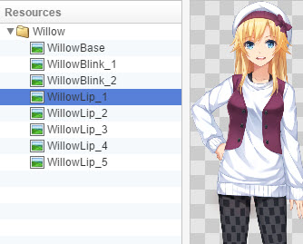
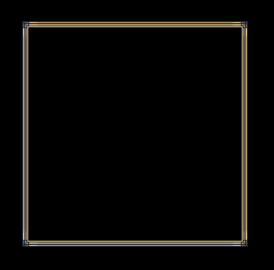
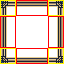
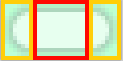
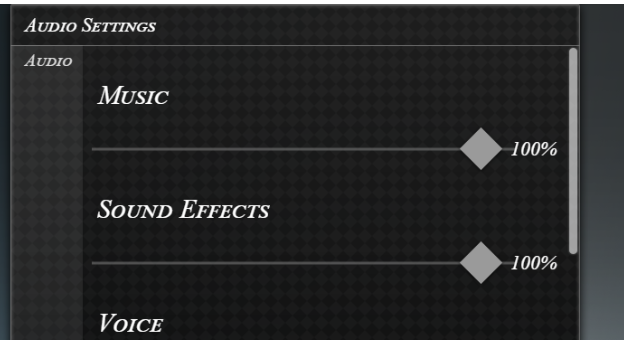
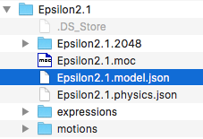
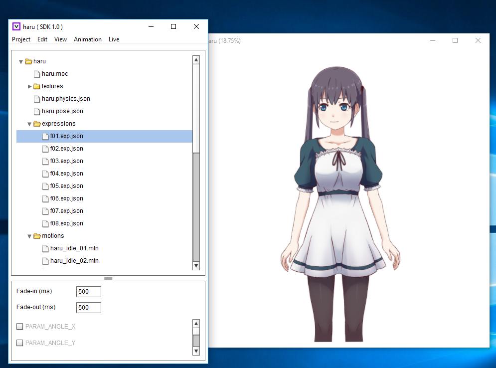
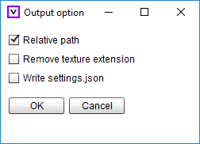

HTML
资源标准
Visual
Novel Maker 允许您导入自己的资源。除非另有说明，否则所有资产没有标准图像大小。我们建议
用户不要超过 1024px ~ 2048px，如果他们计划制作
手机游戏。
角色
用于角色表情的图像。
-
数据
格式- PNG
-
对于
动画角色，它们必须是每帧单独的图像。

背景
用于背景的图像。
图片
用于 CG、动画、系统、图片和 UI 命令的图像。
帧
帧在屏幕上显示图形帧，这对于游戏内
UI 装饰（如游戏内窗口、光标等）很有用。如果
视觉类型的显示
图片命令设置为帧

，则可以使用它。
实际外观取决于图像，也称为皮肤。当然，除了帧之外，带有合适的窗口背景会更好看。
在上例中，导入的皮肤图像如下所示：

因此，一帧不仅仅是一次显示图像，而是显示多
个图像片段并将它们连接在一起形成一帧。黄色标记的区域是角，红色标记的区域是
将被拉伸以适应帧大小的边。角落和边的
大小可以通过显示
图片
命令的字段进行配置。
三部分图像三部分图像将图像分割成三部分，
它们显示方式不同。它是帧的一种更简单的形式。如果
视觉类型的显示
图片命令设置为三部分图像

，则可以使用它。
.黄色标记的左右部分是固定的，中间的红色标记部分会被拉伸。实际图像如下所示：当然，它会被放大，并且有一个浅绿色背景，使其在帮助文件中更明显。原始图像具有透明背景。
左右和中间部分的
大小可以通过
显示
图片

命令的字段进行配置，
并且还可以将方向更改为垂直。
三部分图像对于游戏内 UI 相关的内容（如简单的
按钮、滚动条等）很有用。如果您查看默认
游戏内 UI 的滚动条：
右侧的滚动条就是使用三部分图像完成的。
数据
格式
- PNG、JPG
数据
格式
- PNG、JPG
-
字体要用于游戏的字体。
-
数据
格式- WOFF、FNTWOFF
字体：您可以使用诸如
-
WOFFer之类的工具轻松将 TTF 文件转换为 WOFF。位图
字体：支持bmfont和
-
bmGlyph字体以及任何其他
导出到 fnt/bmfont 格式的字体生成器。文件格式需要
是 fnt-文本。不支持 XML/二进制。对于 bmGlyph，只需选择
“bmfont”作为输出格式。除了文本颜色更改之外，格式化对位图
字体没有影响。
重要
提示：
位图字体可能会消耗大量内存，具体取决于
字符集、样式、大小以及使用了多少不同的位图字体。
请谨慎使用位图字体，尤其是在智能手机等移动设备上。
数据
格式
- OGG、M4A

-Live2D 模型、动作和面部表情会在导入
过程中自动打包到一个 .live2d 存档中（它只是一个 .zip 存档）。要导入 Live2D 模型，您需要选择 .model.json
文件，如本屏幕截图所示：大多数 Live2D
模型都采用 JSON 格式。如果没有，您可以使用
Live2D
查看器

应用程序将您的 Live2D 模型导出为 JSON，如果您只有原始模型文件。在导出
JSON 文件之前，请确保正确添加了所有表情、动作、物理和姿势文件。选择文件 > 写入 > 设置文件

4.将压缩包重命名为 模型名.model3.live2d（在 live2d sdk2.1 重命名为 模型名.model.live2d）
电影